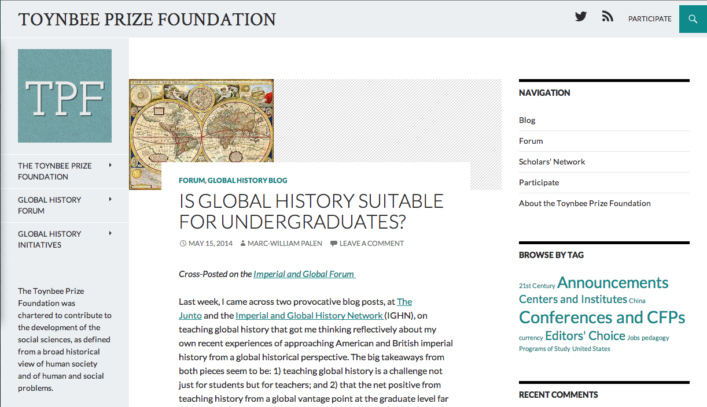
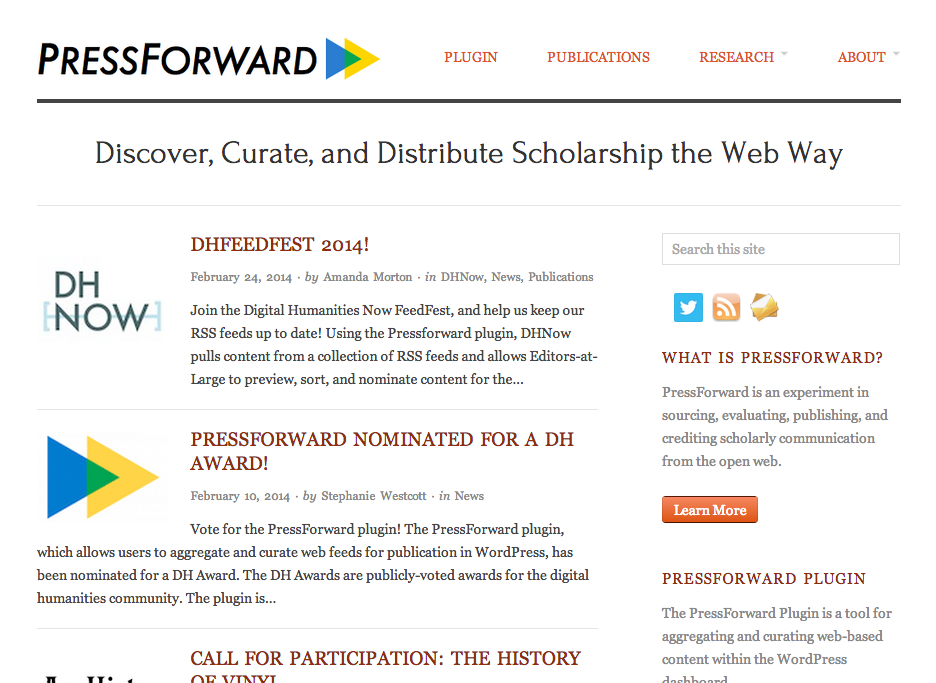
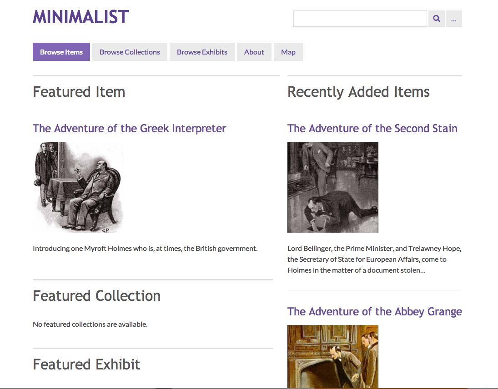
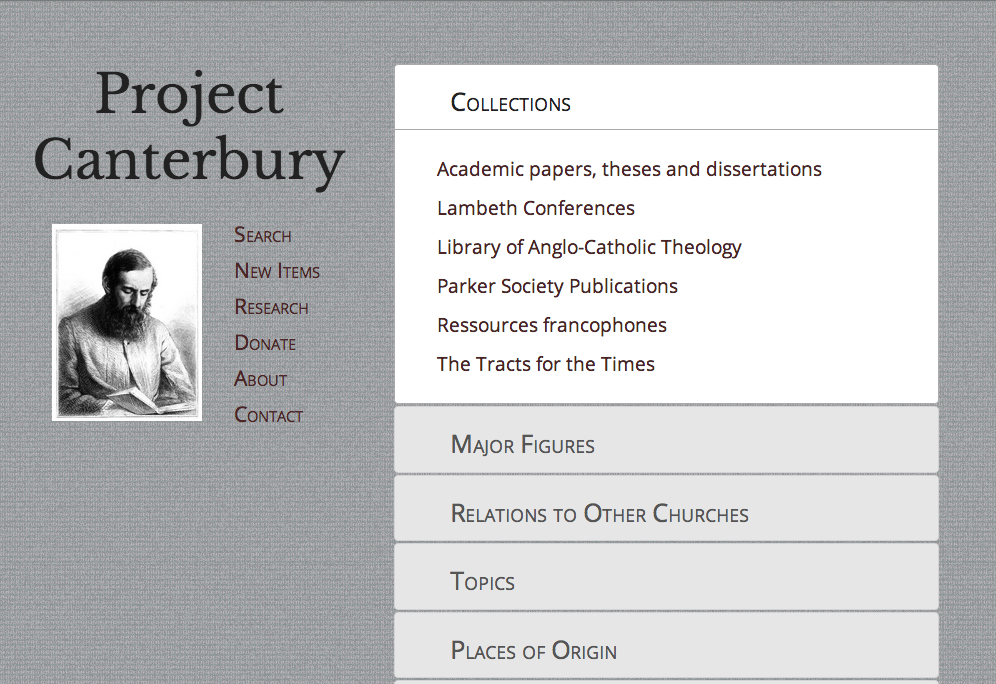
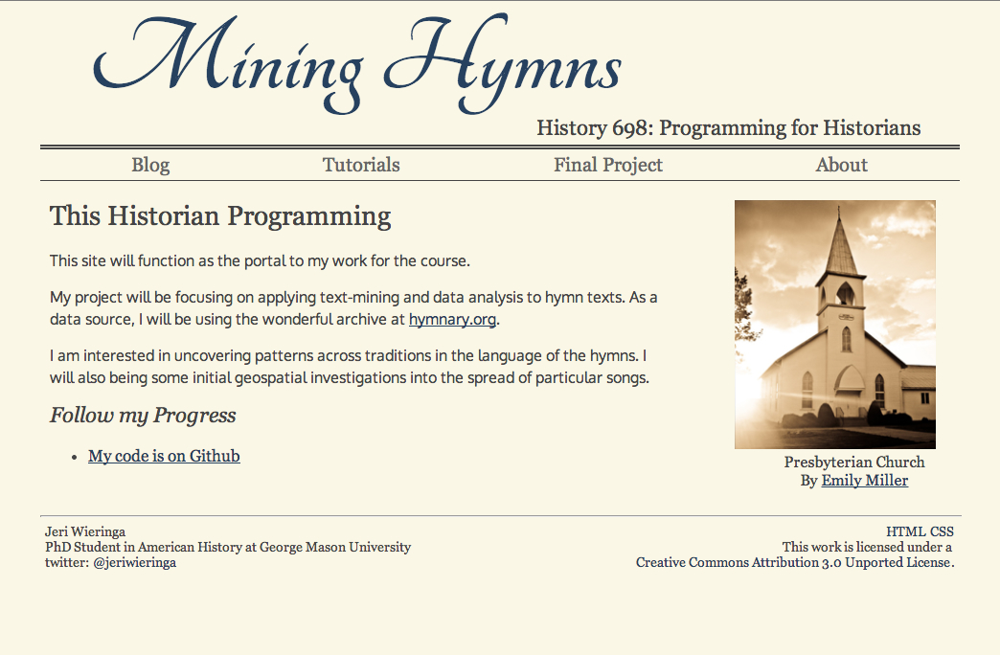
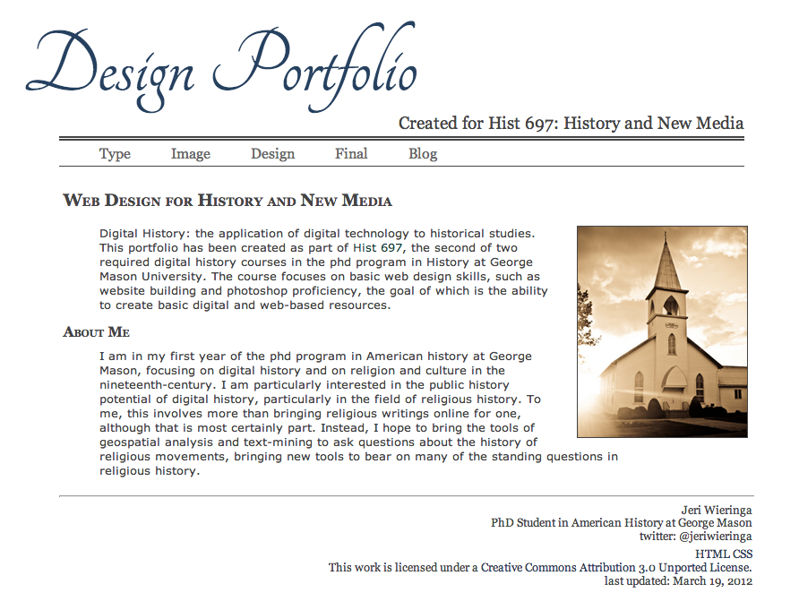

Design work  Theme Customization for Toynbeeprize.org  Theme Customization for Pressforward.org  Contributor to Minimalist for Omeka 2.0  Theme design for Project Canterbury Coursework  Mining Hymns Winner of George Mason's C.W. Bright Pixel Prize.  Design Portfolio